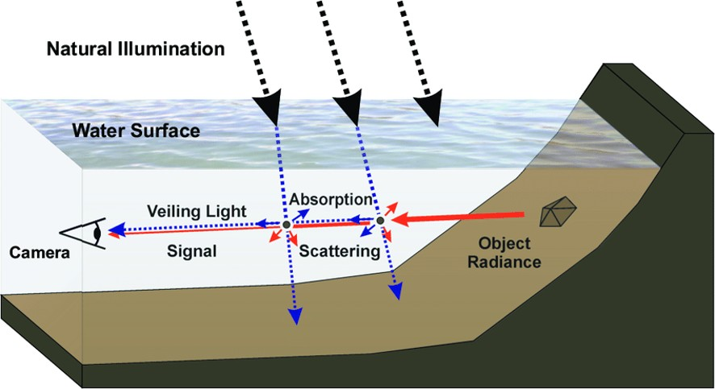

Challenges in Underwater Imaging
The complexities of the underwater environment impose various challenges on image capture and enhancement. Let's explore some of these challenges in depth:
-
Absorption: One of the primary challenges in underwater photography is the absorption of light by water molecules. The absorption is wavelength-dependent; red light gets absorbed in the shallower depths, followed by green, and then blue. As a result, underwater scenes at deeper levels appear monochromatic and usually have a blue or green tint. The loss of colour fidelity makes it difficult to accurately represent the underwater environment.
-
Scattering: Light scattering occurs due to the interaction of light with water molecules and microscopic particles like plankton or sediments. This leads to two major effects: 'Forward Scatter,' which causes a loss of contrast and haziness, and 'Backscatter,' where light reflects into the camera, causing a snow-like effect. The result is a significant reduction in image clarity and contrast.
-
Non-Uniform Illumination: Natural light sources in underwater settings, like sunlight, produce uneven lighting. This is further exacerbated by the water's surface, which can act as a dynamic lens, bending and focusing light in complex ways. Artificial lighting can also introduce problems such as hotspots, where the light is too concentrated, leading to overexposure in certain areas of the image.
-
Fluorescence: Some marine organisms and substances exhibit fluorescence when exposed to specific wavelengths of light. While this can create surreal and visually striking images, it poses a challenge for scientific documentation and studies aiming for accurate colour representation. Additionally, the intensity of the fluorescence can be variable, leading to further inconsistencies in imaging.
-
Suspended Particles: The presence of particulate matter like sand, plankton, or marine snow is common in underwater environments. These particles can obstruct and scatter light, adding noise to the image. They can also cause shadowing effects or even form visible streaks or spots when they are close to the camera lens, creating difficulties in post-processing and analysis.
